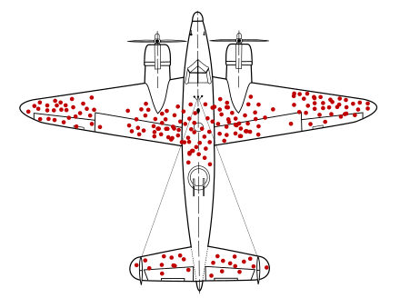

最近女朋友在准备毕业找工作，日常聊天中得知她看到身边有些师兄师姐工资待遇都很好，不是国企就是500强的，明显有些焦虑。这是让我想起了之前看到的一个统计学的理论：幸存者偏差，于是安慰她道：“你听到看到的这些毕业找到很好的工作的人，正式因为他们获得了待遇很好的工作才被人们口口相传从而被你所熟知。也就是说你获得的信息实际上是经过了一层主观选择的过滤，那些工作岗位一般的人很少会被他人交谈中提及，因此你看到的结果并不具有代表性。没有必要太过于着急，大部分人都是不如你的”。说完她若有所思，我也瞬间觉得自己特别有成就感~ 那么什么是幸存者偏差理论呢？
关于幸存者偏差又这么一个经典的案例：
二战中美国美国海军邀请哥伦比亚大学统计学教授亚伯拉罕·沃德运用专业技能分析「飞机应该如何加强防护，才能降低被炮火击落的几率」，根据战斗后战机遭受攻击后弹孔的位置发现：机翼是整个飞机中最容易遭受攻击的位置，而发动机则是最少被攻击的位置。因此美国海军指挥官认为“应该加强机翼的防护，因为这是最容易被击中的位置”，但是沃德教授给出的结论是“我们应该强化发动机的防护”

仔细思考我们会发现统计数据所展示的结果存在以下问题：
- 统计的样本至统计了战斗中成功返航的战机
- 机翼被多次中弹但是仍然可以成功返航
- 发动机位置弹孔较少并不是因为集中的概率小，而是一旦被击中战机安全返航的概率很小
美国海军听取了沃德教授的建议，而后面的事实证明沃德教授的推测是正确的。
幸存者偏差，是一种逻辑谬误，选择偏差的一种。过度关注“幸存了某些经历”的人事物，忽略那些没有幸存的，造成错误的结论。
看了上面的解释和案例是不是对幸存者偏差有了一定的了解，那么在我们日常的生活中有哪些现象可以用幸存者偏差解释呢？
- 老物件更耐用
我们经常会听到身边人感慨还是老物件耐用啊，你看我家十几年前的一些电器或工具到现在还可以使用呢，新买的那些东西经常出现各种各样的问题。事实是这些留下来的老物件肯定是质量非常好的东西，质量不好坏掉的东西也是不会留到现在的。 - 吸烟喝酒的人也会长寿
当你想要劝说身边的朋友家人戒烟戒酒的时候，他们往往会反驳道：你看隔壁那老谁天天烟酒不断，80多了不也一样挺好的。这里面他却忽略了那些因为长期抽烟喝酒而导致很多疾病的人。 - 宣扬成功学，贩卖焦虑
经常会有这样的文章《成功人士具有的几大特征》，文章只看到了马云、马化腾等大佬具备的特征，但是却忽略了同样具有普通人。更有甚者营造出一个身边人仿佛都是年薪百万财富自由的环境，让人产生不学习就会被淘汰的焦虑，从而去宣传贩卖一套所谓的财富自由方法论。
当我们了解了幸存者偏差这一理论后，相信看待问题就会不单单只从单一的角度去观察。我们看到的事物可能是别人想让我们看到的或者经过一层信息过滤剩下的。一句俗话说的好不能只看贼吃肉，不看贼挨揍。对看到的表象有全面的观察和思考，做自己世界的幸存者。